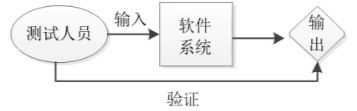
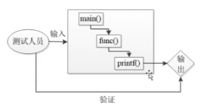
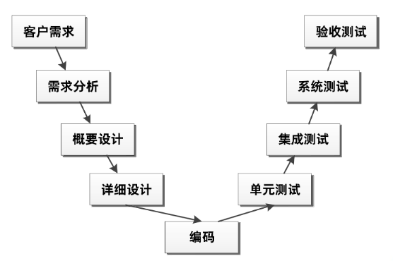
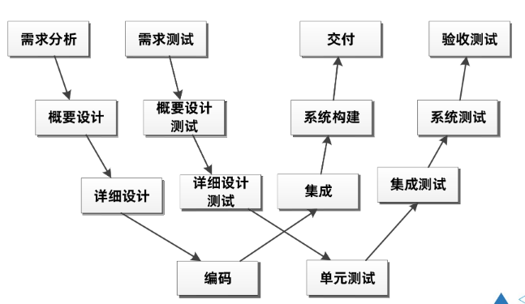

软件测试简介
软件测试概述
使用人工或自动化手段运行或测定某个系统的过程，目的在于检验它是否满足规定的需求或是弄清楚预期结果与实际结果之间的差异
软件测试的发展
（1）最早期：软件调试
（2）20世纪50年代：专门的软件测试
（3）20实际80年代：第一次定义、形成专门的学科
（4）20实际90年代：与开发融合
软件测试的目的
（1）对于软件开发来说：软件测试通过找到的问题缺陷帮助开发人员找到开发过程中存在的问题，包括软件开发的模式，工具，技术等方面存在的问题与不足
（2）对于软件测试来说，是用最少的人力、物理、时间等找到软件中蕴藏的缺陷，保证软件的质量，也能为以后软件测试积累丰富的经验
（3）对于客户需求来说，软件测试能够检验软件是否符合客户需求，对软件质量进行评估和度量，为客户评审软件提供有力的依据
软件测试的分类
测试阶段分类
（1）单元测试：验证软件单元是否符合软件需求与设计，开发人员自测
（2）冒烟测试：软件构建版本建立后，对系统的基本功能进行简单的测试，这种测试重点验证的是程序的主要功能，而不会对具体功能进行深入测试
（3）集成测试：冒烟测试之后，将已经测试过的软件单元组合在一起测试他们之间的接口，用于验证软件是否满足设计需求
（4）确认测试：
（5）系统测试：将经过测试的软件在实际环境中运行，并与其他系统的成分（如数据库、硬件和操作人员等）组合在一起进行测试。
（6）验收测试：主要是对软件产品说明进行验证，逐行逐字的按照说明书的描述对软件产品进行测试，确保其符合客户的各项要求。
按照测试技术分类
（1）黑盒测试（功能测试）：把软件（程序）当作一个有输入输出的黑匣子，它把程序当作一个输入域到输出域的映射，只要输入的数据能输出预期的结果即可，不必关心程序内部是怎么样实现的。

（2）白盒测试（透明测试）：测试人员了解软件程序的逻辑结构、路径与运行过程，在测试时，按照程序的执行路径得出结果。白盒测试就是把软件（程序）当作一个透明的盒子，测试人员清楚的知道从输入到输出的每一步过程。

按照软件质量特性分类
（1）功能测试：测试软件的功能书否能满足客户的要求，包括准确性、易用性、适合性、互操作性。
（2）性能测试：测试软件的性能是否满足客户的需求、性能测试包括负载测试、压力测试、兼容性测试、可移植性测试和健壮性测试等。
按照自动化程度分类
（1）手工测试：测试人员一条一条的执行代码完成测试工作，费时费力且很难保证测试效果。
（2）自动化测试：借助脚本、自动化测试工具等完成相应的测试工作，他也需要人工的参与，但是它可以将要执行的测试代码或流程写成脚本，执行脚本完成整个测试工作。
按照测试项目分类
（1）界面类测试：验证软件界面是否符合客户需求。UI测试（自动化）
（2）安全性测试：试软件在没有授权的内部或外部用户的攻击或恶意破坏时如何进行处理，是否能保证软件与数据的安全。
（3）文档测试：以需求分析、软件设计、用户手册、安装手册为主，主要验证文档说明与实际软件之间是否存在差异。
其他分类
（1） α测试：软件上线之前进行的版本测试。由开发人员和测试人员或者用户协助进行测试。测试人员记录使用过程中出现的错误与问题，整个测试过程是可控的。
（2）β测试：软件上线之后进行的版本测试。由用户在使用过程中发现错误与问题并进行记录，然后反馈给开发人员进行修复。
（3）回归测试：对修改后的程序重新进行测试确认原有的缺陷已经消除并且没有引入新的去恶心啊，这个重新测试的过程就叫做回归测试。
（4）随机测试：没有测试用例、检查列表、脚本或者指令的测试，它主要是根据测试人员的经验对软件进行功能和性能抽查
软件测试模型
V模型

W模型
